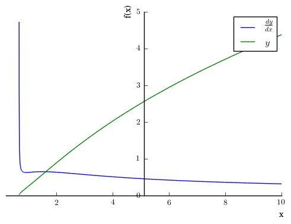

This is a quick demo of Sympy, partly for you, but mostly for me. The actual notebook is available on my github iPythonExamples repository.
# import symbolic capability to Python from sympy import *
# print things all pretty from sympy.abc import * init_printing()
Consider solving the problem
\(y = \frac{x^2\sqrt{3x-2}}{(x+1)^2}\), find \(\frac{dy}{dx}\)
# Need to define variables as symbolic for sympy to use them. x, y= symbols("x, y", real = True)
# Define y y = x**2*sqrt(3*x-2)/(x+1)**2 y # This causes it to output formatted nicely. The print command formats it as computer code
\begin{equation*}
\frac{x^{2} \sqrt{3 x - 2}}{\left(x + 1\right)^{2}}
\end{equation*}
# Taking the natural log of this: a = ln(x**2*sqrt(3*x-2)/(x+1)**2) a # Keep in mind that the left hand side is ln(y)
\begin{equation*}
\log{\left (\frac{x^{2} \sqrt{3 x - 2}}{\left(x + 1\right)^{2}} \right )}
\end{equation*}
# Taking its derivative with respect to x # So, we took the log of the right side, then the derivative diff(a,x)
\begin{equation*}
\frac{\left(x + 1\right)^{2}}{x^{2} \sqrt{3 x - 2}} \left(\frac{3 x^{2}}{2 \left(x + 1\right)^{2} \sqrt{3 x - 2}} - \frac{2 x^{2} \sqrt{3 x - 2}}{\left(x + 1\right)^{3}} + \frac{2 x \sqrt{3 x - 2}}{\left(x + 1\right)^{2}}\right)
\end{equation*}
# That is kind of messy. Let the computer simplify it simplify(diff(a,x))
\begin{equation*}
\frac{3 x^{2} + 15 x - 8}{2 x \left(3 x^{2} + x - 2\right)}
\end{equation*}
# We could have done this all at once simplify(diff(ln(y),x))
\begin{equation*}
\frac{3 x^{2} + 15 x - 8}{2 x \left(3 x^{2} + x - 2\right)}
\end{equation*}
Now, the left hand side processed the same way is
\begin{equation*}
y
\end{equation*}
take the natural log
\begin{equation*}
\ln(y)
\end{equation*}
Take the derivative
\begin{equation*}
\frac{1}{y}dy
\end{equation*}
So, our entire processed equation is
\begin{equation*}
\frac{1}{y}dy = \frac{3 x^{2} + 15 x - 8}{2 x \left(3 x^{2} + x - 2\right)}
\end{equation*}
so all we have to do is multiply the processed right side by \(y\) and we have our answer and our derivative is
simplify(diff(ln(y),x)*y)
\begin{equation*}
\frac{x \left(3 x^{2} + 15 x - 8\right)}{2 \sqrt{3 x - 2} \left(x^{3} + 3 x^{2} + 3 x + 1\right)}
\end{equation*}
Of course, Sympy is capable enough that we can just take the derivative directly
simplify(diff(y,x))
\begin{equation*}
\frac{x \left(3 x^{2} + 15 x - 8\right)}{2 \sqrt{3 x - 2} \left(x^{3} + 3 x^{2} + 3 x + 1\right)}
\end{equation*}
but that was way too easy.
We could compare them, just to be sure they are the same
simplify(diff(y,x))==simplify(diff(ln(y),x)*y)
True
Or plot this monstrosity
plot((diff(y,x),(x,0.2,10)), (y, (x,0.5,10)))

# To change colors # show = False delays the plot until we can set all of the parameters # legend turns on the legend and uses the labels we have later. p = plot((diff(y,x),(x,0.2,10)), (y, (x,0.5,10)), show = False, legend = True) p[0].line_color = 'blue' p[0].label = '$\\frac{dy}{dx}$' p[1].line_color = 'green' p[1].label = '$y$' p.show()

What if we wanted to make a substitution?
y.subs(x,alpha)
\begin{equation*}
\frac{\alpha^{2} \sqrt{3 \alpha - 2}}{\left(\alpha + 1\right)^{2}}
\end{equation*}
Comments
comments powered by Disqus